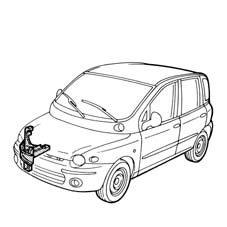
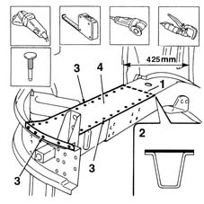
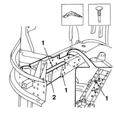
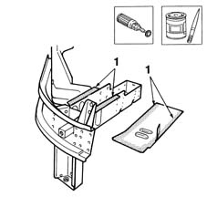
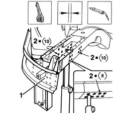
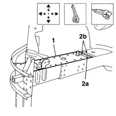
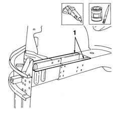
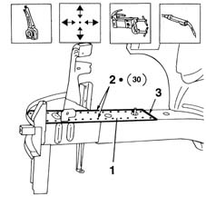
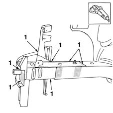
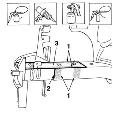

7210A45 R.R. FRONT PANEL (level 2)
- Path
- Procedures > 72 PANELS AND FRAME > 7210 REMOVING REFITTING > 7210A STRUCTURAL ELEMENTS (FRONT PART) > 7210A45 R.R. FRONT PANEL (level 2)
- Kind
- repair procedure (removal / refitting; the operation number is the code)
- Applies to
- all engines; all production periods
- Interactive page
- https://sloeber94.github.io/elrnDB-fMltpl/en/#/2892306
Applies to: all engines; all production periods
 Removing
Removing
 Refitting
Refitting7210A15 R.R. HEADLAMP HOUSING/FRONT WING CROSSMEMBER
7210A55 R.R. PILLAR PANEL BRACKET/REINFORCEMENT
7210A16 R.R. WING LOWER CROSSMEMBER
Move all fouling parts.
Check if any of the connected parts are deformed by checking body alignment dimensions. Use appropriate measurement tools (reference rigs, templates or gauges).
Straighten the body if necessary.

Applies to: all engines; all production periods
Use a grinding wheel to remove the paint and expose the spot welds.
1. Cut with a pneumatic saw following the cutting lines in accordance with the dimensions given in the figure.
2. Cross-section of key area as a guide to allow the operator to adjust cutting position and depth in order to avoid damage to the underlying panels.
3. Use a spot welder to remove the spot welds exposed previously.
Use a chisel and hammer to remove the spot welds cropped previously.
4. Remove the top scrap on the partial strut.

Applies to: all engines; all production periods
1. Drill out the weld spots shown in the figure.
Usiing a hammer and chisel, remove the spot welds cropped previously.
2. Remove the strut.

Applies to: all engines; all production periods
Refitting
RemovingStraighten the edges of the strut seating with a hammer and profiled stake.
Use a grinding wheel to remove the spot weld residues.
1. Drill holes as shown in the figure.
2. Apply the electroweldable paint finish to the areas shown in the figure.

Applies to: all engines; all production periods
Use a rotary brush to remove the rust-proofing from the part.
1. Apply the electroweldable paint finish to the areas shown in the figure.
Applies to: all engines; all production periods
1. Position and fix correctly the partial strut on the car using the gauge and self-locking grippers.
Check the parts are properly aligned.
2. Use a MIG welder and fill weld the areas shown in the figure.

Applies to: all engines; all production periods
1. Position the top part of the strut and fix it with self-locking grippers.
2. Use a pneumatic saw following the cutting line (2a) and trim the panel to remove any excess (2b).

Applies to: all engines; all production periods
Use a grinding wheel to remove the spot weld residues.
1. Apply the electroweldable paint finish.

Applies to: all engines; all production periods
1. Position the part on the car and secure using self-locking grippers.
2. Use a spot welder to weld the areas shown.
3. Use a MIG welder and seam weld the areas shown in the figure.

Applies to: all engines; all production periods
Correct any deformations in the panel using a profiled stake and mallet.
1. Use a grinding wheel to level the weld and remove.

Applies to: all engines; all production periods
1. Apply rust-proofing to newly-welded areas.
2. Seal the joint lines shown in the figure.
Proceed with painting in accordance with the specified procedure.
3. Apply wax oil inside the partial strut.

Applies to: all engines; all production periods
Refit fouling parts.
7210A16 R.R. WING LOWER CROSSMEMBER